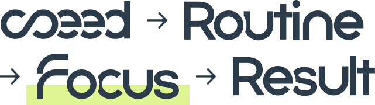

Focuseed는 '하루의 루틴' 속에서 집중력을 길러가는
퍼포먼스 뉴트리션 브랜드입니다
- 몸이 깨어나며
집중력이 상승합니다 -
'포커스부스터' 섭취 후
집중력이 점차 상승합니다 - 최적의 집중 구간에
진입합니다
- 1구간
- 2구간
- 3구간

about
your routine
당신의 하루는 어떤 리듬으로 흐르고 있나요?
오늘의 루틴을 설계해 보세요
* 루틴을 기록하면 '오늘의 집중 점수'가 생성됩니다